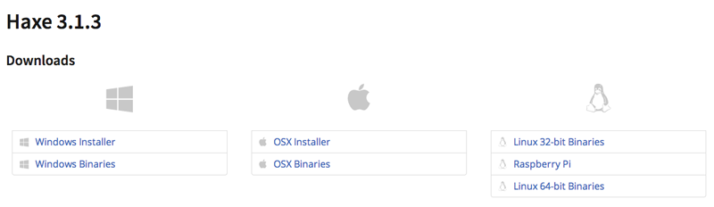

You will need:
- A computer! Almost any will do: all software used on this course is available for Windows, OSX and Linux.
- An internet connection during installation (once everything is installed you won't need a connection)
- A text editor. Sublime Text is excellent and works on all platforms, but any plain text editor will be fine. Please note: programs like Microsoft Word are not suitable for writing code!
Installing Stencyl
Note: Stencyl is just for the Level 01 beginner's course - if you're on Level 02, skip straight to Haxe!
Stencyl is a powerful game creation tool that allows you to create videogames for the desktop, web and mobile devices. It's very easy to use and install:
Go to the Stencyl website and install the latest version. Stencyl is available for Windows, OSX and Linux. You should see a page similar to this, so choose your platform and install the software.

That's it! Almost. There's one setting in Stencyl we'll need to change, which will adjust the artwork size when we make games.
Open Stencyl, and go to File > Preferences.
Go to the Workspace tab, and set the Scale to be "Standard (1x)". You'll only need to do this once and Stencyl will remember the setting as long as it's installed.

Installing Haxe/OpenFL
Haxe is an open-source programming language, designed to let you create games and apps for almost every platform out there. OpenFL is a free Haxe library designed to make coding games easy and fun (OpenFL uses a tool called Lime to build projects). All three can be automatically installed by following these easy steps:
Go to the Haxe website and install the latest version. Haxe is available for Windows, OSX and Linux. You should see a page similar to this, so choose your platform and install the software.

For our Haxe work (both installing things and actually making games), we're going to use the command line - this looks really scary if you've not done it before, but it isn't, we promise! Using the command line is the best way to install and work with many things, and Haxe is one of them. So let's jump in!
- Windows users: go to the Start menu, then Accessories > Command Prompt.
- Mac users: The easiest way is to click the serch box in the top right of your screen, and search for Terminal. Alternatively it's in Applications > Utilities > Terminal.
- Linux users: this will vary depending on what you're using, but you can usually search for it, or hit Ctrl + Alt + T.
Next, make sure you're connected to the internet and type:
haxelib install lime
Your command prompt will show you the download progress, and will let you know when it's finished.
Repeat the previous step, but this time the command is:
haxelib install lime-tools
Finally, install OpenFL by running:
lime install openfl
First, we'll need to open a terminal.
Quick tip: to check that Haxe has been installed, type the following into your terminal and hit Enter:
haxe -version
If you see something like "3.1.3", then everything's worked. If not, re-install Haxe.
And that's it! You're ready to rock and roll. To check that everything's working, you can now grab the example projects and try them out. Please see the Code page for how to do this.
Optional: Installing a Haxe syntax highlighter
Although you can edit Haxe code in any text editor, it's very useful to have your editor know what Haxe is - this lets your editor do a few clever things, like highlighting your code in different colours to make it easier to read, or auto-completing your code to help you out. This is optional, but quite useful.
Every editor does it differently, and in fact some will already have Haxe support - its worth googling to see if yours does. We recommend Sublime Text 3, as it works everywhere and plays nicely with Haxe once you add the support to it. To do this, follow these steps:
- Install Package Control by following the instructions on this page.
- Open Sublime Text and go to File > Preferences > Package Control
- Select the "Install package" option from the list.
- Select "haxe" from the drop-down menu (it's a long list, if you type "haxe" it'll filter for it)
- Click the Haxe item to install it. When it's finished, you should see a message in the bottom corner of the Sublime editor window saying that it's been successfully installed.
- Restart Sublime text, and open a Haxe file - you should now see that it has syntax colouring enabled. That's it!